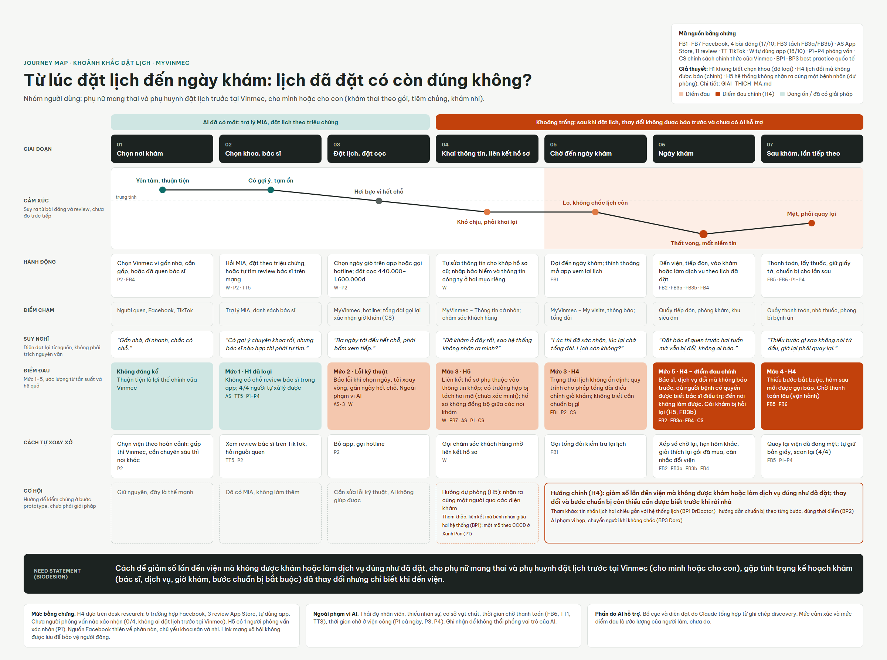
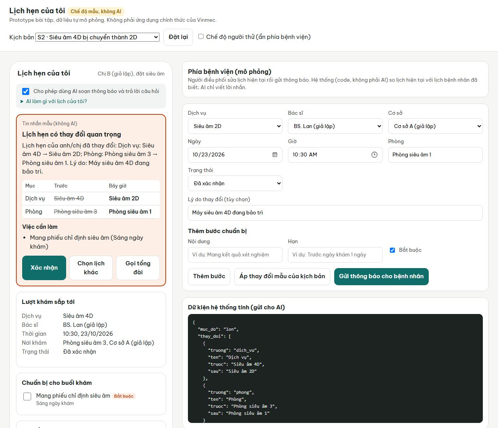

MyVinmec đã có AI giúp bệnh nhân đặt lịch. Sau khi đặt, chưa có gì giúp bệnh nhân biết lịch đã thay đổi, cho đến khi họ đến viện.
[Họ và tên] · [Khóa K1/K2/K3] · 19/10/2026
| Giả thuyết | Bằng chứng | Kết luận |
|---|---|---|
| H1 · Không biết chọn khoa, bác sĩ | App đã có trợ lý MIA và đặt theo triệu chứng; 4/4 người tự xử lý được | Loại |
| H2 · Không biết khi nào có kết quả | 0/4: được gọi, nhắn, giờ in trên phiếu, hoặc lên app sáng hôm sau | Không ủng hộ |
| H3 · Không hiểu kết quả | 1/4: phiếu có cột ngưỡng, bác sĩ giải thích | Yếu |
| H4 · Lịch đổi mà không được báo | 5/8 trường hợp Facebook: đổi bác sĩ, 4D thành 2D, đến nơi không làm được, thiếu bước bắt buộc. Chính sách: tổng đài được đổi giờ, báo lại bằng cuộc gọi. 0/4 phỏng vấn | Giả thuyết chính, còn mở |
| H5 · Hệ thống không nhận ra cùng một người | P1 xác nhận hồ sơ không đồng bộ giữa các nơi khám (ngoài Vinmec); 4/4 tự giữ hồ sơ; app chỉ liên kết khi thông tin khớp | Dự phòng, tín hiệu khá |
Ngoài phạm vi AI: thái độ nhân viên, thiếu nhân sự, cơ sở vật chất, chờ thanh toán. Ghi nhận để không thổi phồng vai trò của AI.

| H1 | H2 | H3 | H4 | H5 |
|---|---|---|---|---|
| 7 | 7 | 7 | 14 | 9 |
Mức nghiêm trọng · khoảng trống so với giải pháp hiện có · số bên liên quan · giá trị với Vinmec · khả thi và an toàn
Đủ để chọn hướng làm prototype. Chưa đủ để nói vấn đề xảy ra thường xuyên: chưa ai trong nhóm người dùng này được phỏng vấn.
Đo bằng: tỷ lệ lượt khám phải đổi khi đến nơi; tỷ lệ biết trước khi rời nhà; số cuộc gọi chỉ để kiểm tra lịch.
Bài học: thông báo chỉ có tác dụng khi gắn vào hệ thống lịch; tin nhắn phải cho bệnh nhân hành động.
Bài học: gửi từng bước đúng lúc, không gửi một lần.
Bài học: việc hẹp, có kịch bản, nghiêng về báo dư, ngoài phạm vi thì chuyển người.
Lưu ý: nghiên cứu DrDoctor và Dora có tác giả từ phía nhà cung cấp. Chưa ví dụ nào xử lý đúng tình huống bệnh viện tự đổi kế hoạch.

Màn hình mô phỏng phía bệnh viện
Bảng "Trước → Bây giờ" luôn đúng dữ kiện
Claude hoặc GPT; tiêu đề, lời nhắn, việc cần làm; JSON theo schema
Xác nhận · Chọn lịch khác · Gọi tổng đài (đo số giây)
6 kịch bản dựa trên FB1–FB5, có kịch bản đối chứng không đổi. Chạy được cả khi không có AI; người dùng tắt được AI theo chính sách dữ liệu của Vinmec.
| Chỉ số | Mục tiêu | Kết quả |
|---|---|---|
| Hiểu đúng thay đổi | ≥ 2/3 người | [điền] |
| Thời gian đến khi hành động | < 60 giây | [điền] |
| Hành động đúng | ≥ 2/3 | [điền] |
| Câu y khoa, khẩn cấp chuyển đúng | 100% | [điền] |
| Mức hài lòng | ≥ 4/5 | [điền] |
[Điền sau khi thử: T1–T3 gặp gì, trích dẫn tiêu biểu, đã sửa gì]
| Rủi ro | Cách giảm thiểu trong prototype |
|---|---|
| AI báo sai thay đổi | Code tính thay đổi; AI chỉ diễn đạt |
| AI trả lời câu hỏi y khoa | Phân loại "y khoa" → chuyển nhân viên y tế |
| AI bịa bước chuẩn bị | Chỉ dùng bước có trong dữ liệu khoa đã duyệt |
| Lộ thông tin | Dữ liệu giả lập; khóa API chỉ ở máy chủ |
| Người không dùng app bị bỏ lại | Giữ tổng đài song song (khi triển khai) |
| Không biết dữ liệu được AI xử lý | Ô "Cho phép dùng AI" kèm giải thích; tắt thì không gửi gì cho AI (chính sách Vinmec) |
Câu có dấu hiệu khẩn cấp (ra máu, khó thở, thai không cử động…) được bắt bằng từ khóa trước khi gọi AI, trả lời ngay: gọi 115 hoặc đến cấp cứu.
Danh sách từ khóa cần bác sĩ đầu mối duyệt.
Đồng ý trước phỏng vấn · ẩn danh P1–P4 · lược thông tin sức khỏe · không lời khuyên y khoa · ghi rõ phần do AI tạo
Hỏi trước, đưa đáp án sau: "Người này đã làm hành vi cần kiểm chứng trong 3 tháng qua chưa?"
Số liệu đối chiếu bài gốc · mã không trùng · phiếu đủ đồng ý · log có người thật · 10 lĩnh vực PMBOK
Không ngồi chờ đề: tìm nhu cầu từ tuần 1. M muộn thì cắt phạm vi prototype, không cắt vòng thử; quá tuần 3 báo đỏ